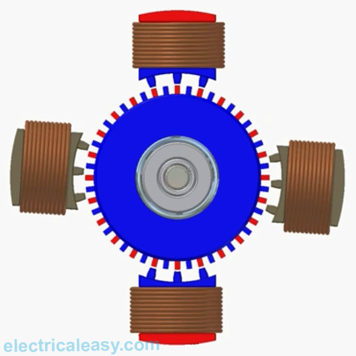
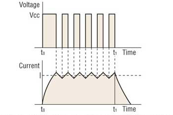

<h3> Stepper Motor Control</h3>
<p>
<a href='https://en.wikipedia.org/wiki/Stepper_motor'>Stepper motors</a> are great for position control. They can be found in desktop printers, plotters, 3d printers, CNC milling machines, and anything else requiring precise position control.
</p>

### Pros
- Excellent position accuracy
- High holding torque
- High reliability
- Most steppers come in standard sizes
### Cons
- Small step distance limits top speed
- It's possible to "skip" steps with high loads
- Draws maximum current constantly
We will be using bipolar stepper motors. Compared to unipolar stepper motors, bipolar steppers require more complicated circuitry (in order to switch polarities) but are stronger by weight.
<br> <br>
<iframe width="600" height="400" src="https://www.youtube.com/embed/u12dt1RqLW0" title="YouTube video player" frameborder="0" allow="accelerometer; autoplay; clipboard-write; encrypted-media; gyroscope; picture-in-picture" allowfullscreen></iframe>
<br> <br>
<iframe width="600" height="400" src="https://www.youtube.com/embed/bkqoKWP4Oy4" title="YouTube video player" frameborder="0" allow="accelerometer; autoplay; clipboard-write; encrypted-media; gyroscope; picture-in-picture" allowfullscreen></iframe>
<h3> Microstepping</h3>
<p> <a href='https://www.linearmotiontips.com/microstepping-basics/'>Microstepping</a> is a method of controlling stepper motors, typically used to achieve higher resolution or smoother motion at low speeds.
Microstepping control divides each full step into smaller steps to help smooth out the motor’s rotation, especially at slow speeds. For example, a 1.8 degree step can be divided up to 256 times, providing a step angle of 0.007 degrees (1.8 ÷ 256), or 51,200 microsteps per revolution. </p>
<p> Microstepping is achieved by using pulse-width modulated (PWM) voltage to control current to the motor windings. The driver sends two voltage sine waves, 90 degrees out of phase, to the motor windings. While current increases in one winding, it decreases in the other winding. This gradual transfer of current results in smoother motion and more consistent torque production than full- or half-step control.</p>
<h3> Driving Stepper Motors</h3>
There are a range of options available for driving stepper motors.
- Similar to DC motors, if they are very tiny and require very little current, it is possible to [drive motors directly from the MCU](https://www.hackster.io/news/drive-a-tiny-stepper-directly-with-arduino-911571f8cd0e) without an additional driver. However, most of the practical applications we're interested in require more current than that.
- You can use both ports of the <a href='../../lab/machine/L9110
_step.html' target="_self">L9110</a> to drive a stepper, but you'll be limited to 12 V. Alternatively, you can use the more powerful [L298N module](https://www.makerguides.com/l298n-stepper-motor-arduino-tutorial/) in a similar way.
But neither of these options allow you to limit current.
- Chopper drivers address the current limiting problem, in a much more common package. These are used in 3D printers and lots of other consumer applications.
A chopper driver addresses the problem of obtaining high torque at high speed from a stepper motor by turning the output voltage to the motor on and off rapidly (aka “chopping”) to control the motor current. At each step of the motor, a very high voltage (typically up to eight times higher than the motor’s nominal voltage) is applied to the motor windings. This causes the current to rise rapidly, according to the relationship between current rise and inductance. It also allows higher current to be produced, according to Ohm’s law. (From <a href='https://www.linearmotiontips.com/what-is-a-chopper-drive-for-a-stepper-motor/'> Linear Motion Tips</a>).
Voltage = Current x Resistance, so stepper motors with higher coil resistance need less current to operate at the same voltage.

We keep a number of chopper drivers around the lab:
- The most common, and cheapest, is the <a href='https://www.pololu.com/product/1182'>A4988 Driver</a>. It works with voltages from 8-35 V, so it won't work for driving a stepper with 5 V.
- In order to work with lower voltages, we can use the <a href='https://www.pololu.com/product/2134'>DRV8834 Low-Voltage Stepper Driver</a>. See our page on it <a href='../../lab/machine/drv8834.html' target="_self">here</a>.
- Another, cheaper, low-voltage chopper driver is the <a href='https://www.pololu.com/product/2876'>STSPIN220</a>. This works equally well, but pay attention to the wiring diagram.
Make sure to review the product description and datasheet for the device you plan to use.
_Note: These products can get hot enough to burn you long before the chip overheats. Take care when handling this product and other components connected to it._
### Stepper Motors
We have a number of different bipolar stepper motors in the lab. (We also have <a href='https://create.arduino.cc/projecthub/debanshudas23/getting-started-with-stepper-motor-28byj-48-3de8c9'>28BYJ-48 unipolar steppers</a> and drivers, but that's a separate topic).
Find motors around the lab and look up their data sheets, especially rated current/phase, voltage, and phase resistance (e.g. US-17HS441, 17HS19-2004S1, 17HS4401, etc.).
Let's use the [17HS19-2004S1](https://www.omc-stepperonline.com/nema-17-bipolar-59ncm-84oz-in-2a-42x48mm-4-wires-w-1m-cable-connector-17hs19-2004s1) for this example. Note some of the Electrical Specifications:
- Rated Current/phase: 2.0 A
- Voltage: 2.8 V
- Phase Resistance: 1.4 Ω
<!-- Let's use the following motor for this example:
<a href='https://www.omc-stepperonline.com/nema-17-bipolar-1-8deg-26ncm-36-8oz-in-0-4a-12v-42x42x34mm-4-wires.html?search=Nema%2017%20Bipolar%201.8deg%2026Ncm%20%2836.8oz.in%29%200.4A%2012V%2042x42x34mm%204%20Wires'>Nema 17 Bipolar 1.8deg 26Ncm (36.8oz.in) 0.4A 12V 42x42x34mm 4 Wires</a>.
Note some of the Electrical Specifications:
- Rated Current/phase: 0.4A
- Voltage: 12V
- Phase Resistance: 30ohms -->
<h3>Current Limiting </h3>
<p> Our motors have a maximum current rating of 2 A with a 1.4 Ω coil resistance, which would indicate a maximum motor supply of 2.8 V. Using such a motor with a higher voltage would allow higher step rates, but the current must actively be limited to under 2 A.
</p>
<h3> Wiring</h3>
<p> Wire the board as described on the product page. Include a 100uF capacitor between the VCC and GND in order to protect the driver from voltage spikes.
</p>
<h3> Programming </h3>
<p> At the most basic level, we can control the chopper driver simply by sending pulses to the STEP pin of the driver. Note: if you are using a driver with 4 wires connected to your MCU, you should use a different control program.
</p>
<pre><code class="language-arduino">
const int stepPin = 13;
const int dirPin = 12;
void setup() {
// put your setup code here, to run once:
pinMode(stepPin, OUTPUT);
pinMode(dirPin, OUTPUT);
digitalWrite(dirPin, LOW);
}
void loop() {
// put your main code here, to run repeatedly:
digitalWrite(stepPin, LOW);
delay(50);
digitalWrite(stepPin, HIGH);
delay(50);
}
</code></pre>
<p> Switching the DIR pin from LOW to HIGH will reverse the direction of the motor. </p>
<p> We can choose a library to help simplify control of stepper motors. The <a href='https://www.arduino.cc/en/reference/stepper'>Arduino Stepper Motor Library</a> supports differnt driver configurations. The <a href='https://www.airspayce.com/mikem/arduino/AccelStepper/index.html'>AccelStepper</a> library extends this functionality with acceleration/deceleration and non-blocking (no delay()) functions. </p>
<pre><code class="language-arduino">
#include <AccelStepper.h>
const int stepPin = 13; // blue
const int dirPin = 12; // orange
// Define a stepper and the pins it will use
AccelStepper stepper(1, stepPin, dirPin); // initialise accelstepper for a two wire board
void setup()
{
}
void loop()
{
if (stepper.distanceToGo() == 0)
{
// Random change to speed, position and acceleration
// Make sure we dont get 0 speed or accelerations
delay(1000);
stepper.moveTo(rand() % 1000);
stepper.setMaxSpeed((rand() % 1000) + 1);
stepper.setAcceleration((rand() % 1000) + 1);
}
stepper.run();
}
</code></pre>